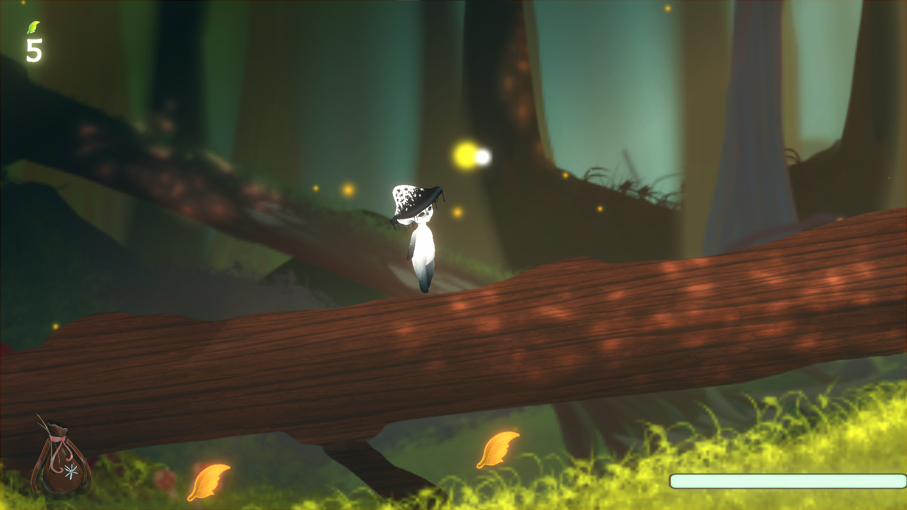
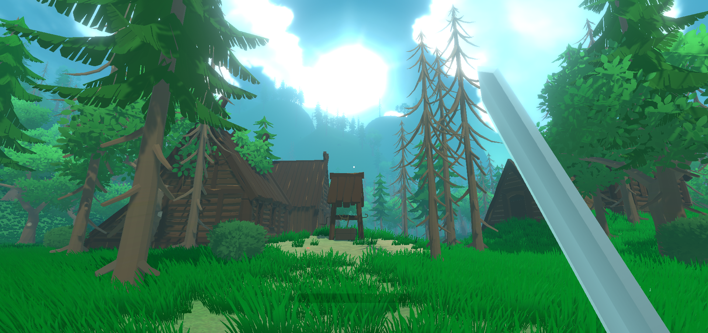
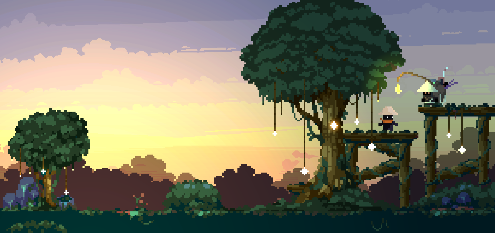
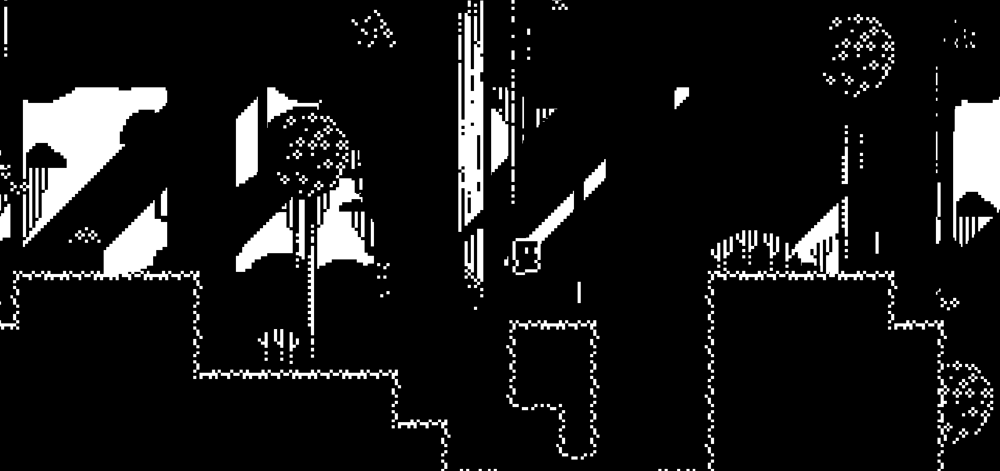
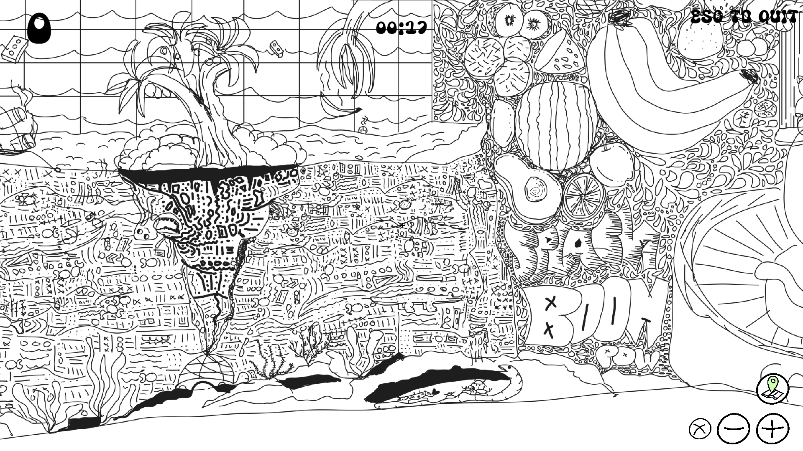
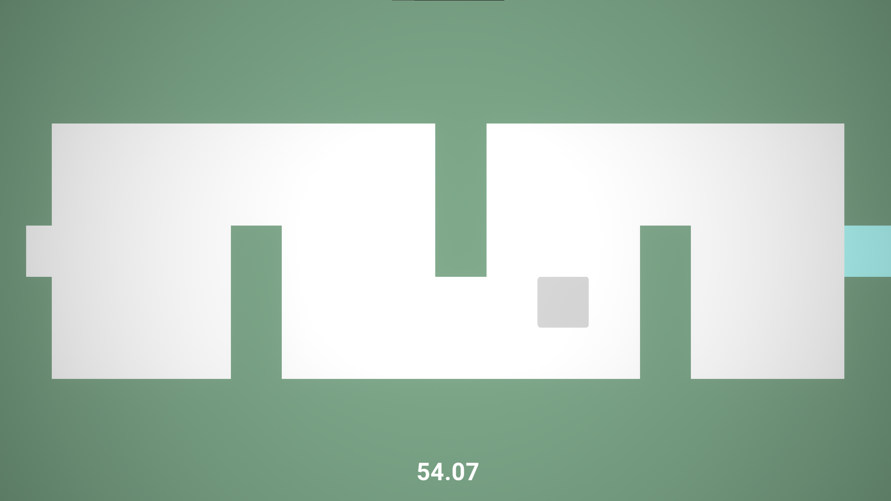

Petal: A 2d adventure platformer set in a vast fantasy setting,
Atra is on for a big journey to reveal who and what she is.
This co-op project was started in the beginning of my first year and it gained quite a lot of traction
and people started to like the idea, I gained a lot of experience with the coding language c#.
Together with my game arts designer Dunja Heuer we are currently still working on this project,
My own part to this project was making the vision work and making sure that all the mechanics work flawlessly together.
From making the menu’s to making the player move has all been done by me,
I can also help with artworks and try to play a role in this too.
The project is making good progress but its far from done anytime soon.
Made by : MontEntertainment


Coding Experience


Projects


Swordiir is a 3D fantasy adventure game where you have to traverse a beautifull world in search for the missing rune
stones, battle multiple enemy types with lots of cool weapons.
once all the rune stones have been collected it is your duty to create the god sword and defeat the evil beast.
This project was started as a game for a 3 day game jam and it's turning out to be one of my biggest
projects to this day, while making the code and visuals in unity i learned a lot with 3D lighting and even modelling.
Once the game comes out it would be a great addition for my portfolio!
Made by : MontEntertainment
Made by : MontEntertainment

Samurai Shriu is a 2D vertical platformer with a nice setting. Your goals is to traverse all of the hard obstacles
and get to the top to be abled to get your well deserved ranking! This project was originally started as just an idea that
we had, looking back on it i definetely see potential and will be working on this in the future.
Made by : MontEntertainment
Made by : MontEntertainment

Umbra is a 1Bit 2D platformer, traverse levels filled with action and make good use of your weapon(the umbrella).
float through levels, slice through levels and conquer the world!
Using unity i quickly learned that doing a big tilemap project just didnt work for me however i did have a lot
of fun designing the level and the character. With the use of aseprite(pixel art app) i designed and animated the character
this gave me a big boost in my capability's and im looking forward to finishing it!
Made by : MontEntertainment
Made by : MontEntertainment

100 snails is a where is waldo inspired game where you have to find a certain amount of snails to win.
the whole catch of this project was that its made in just 3 DAYS! me with 2 fellow students did all of the art and mechanics
together in 3 days and made it to second place in the tournament! what i learned about this project was that
if you have a certain amount of time to make something dont think too open. make what you can and make sure it
works.
Made by : MontEntertainment
Made by : MontEntertainment

Movement maze is a game where you are a grey cube and you have to move through levels to complete the game, gain coins
and pick unique outfits! made for an arcade machine i would say this game was a big hit for us.
I learned to write code with the use of player prefs and made sure that the scoreboars updated correctly.
this game is also planning to release sometime soon.
Made by : MontEntertainment
Made by : MontEntertainment